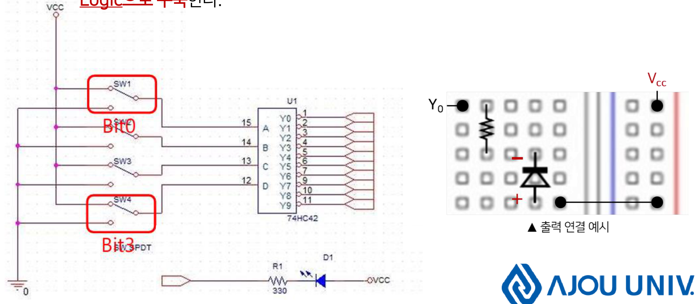
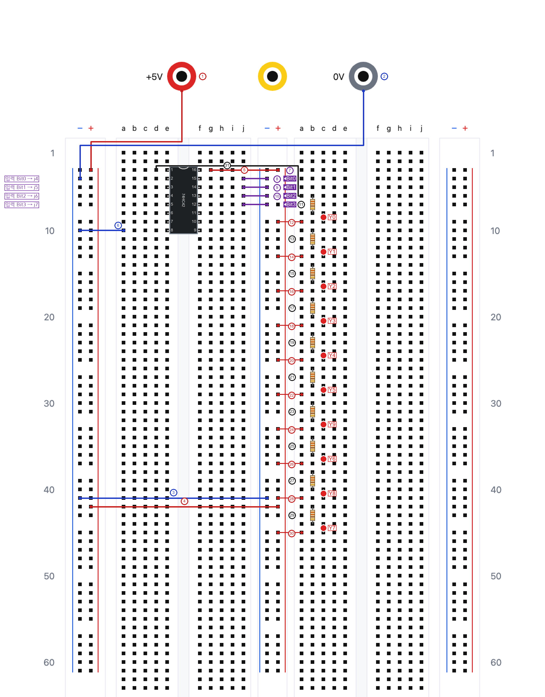
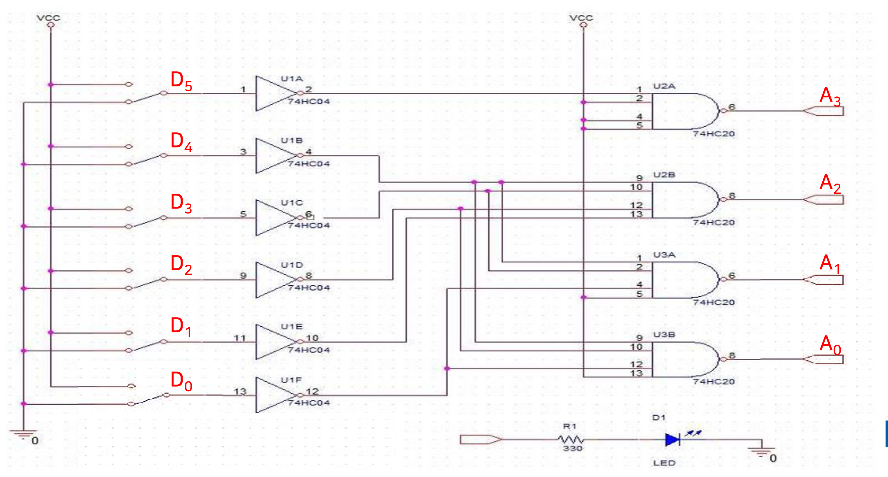
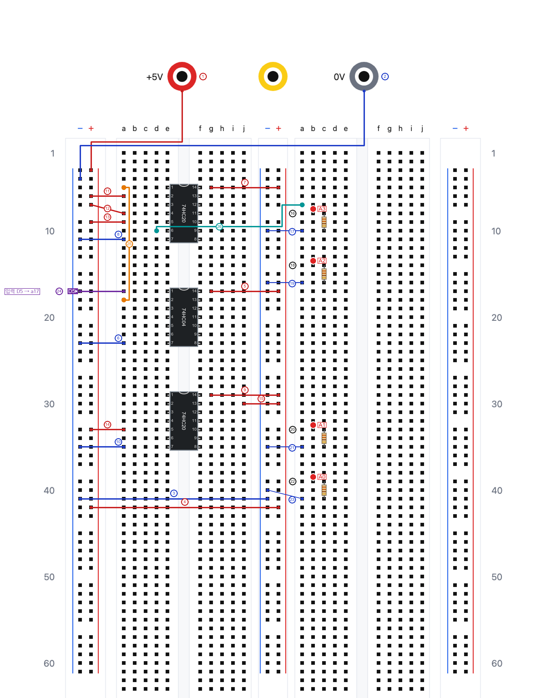
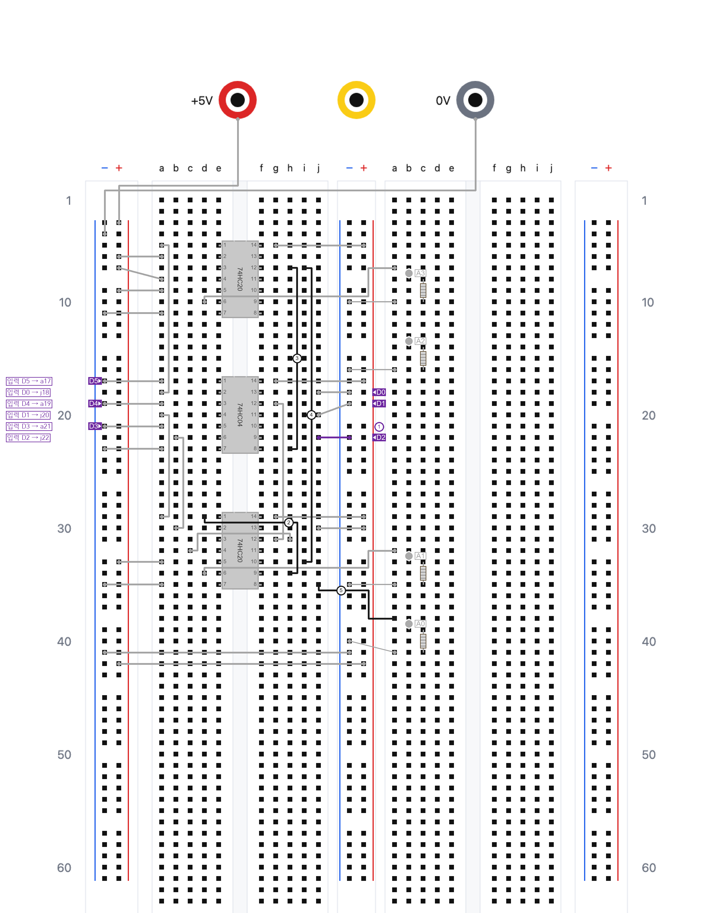
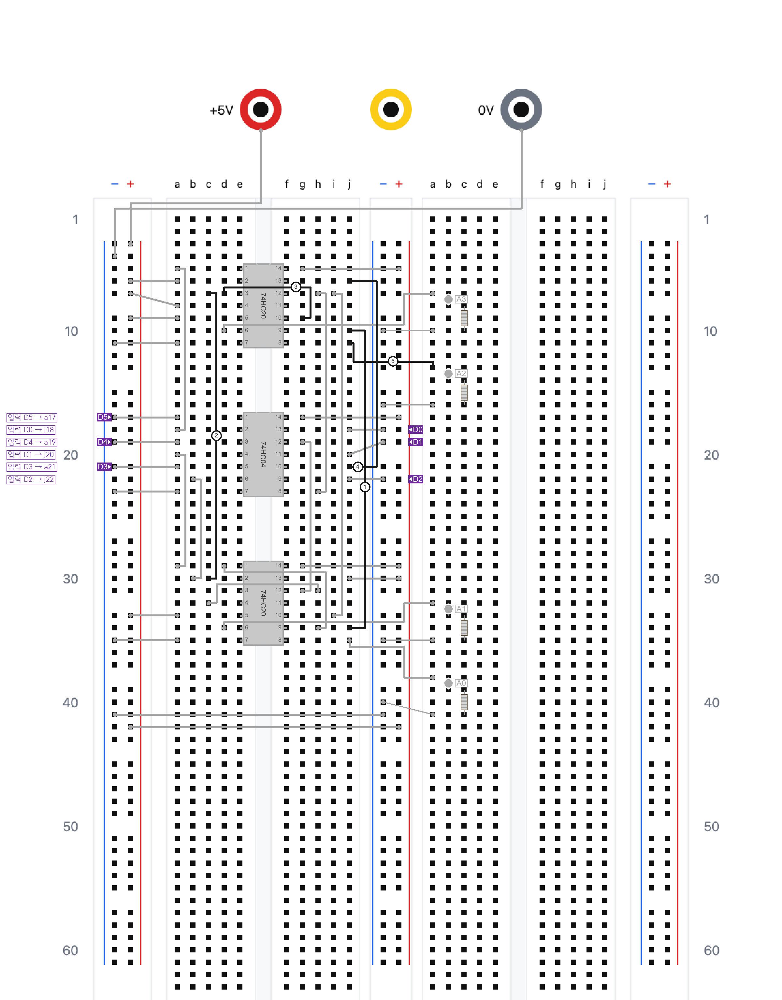
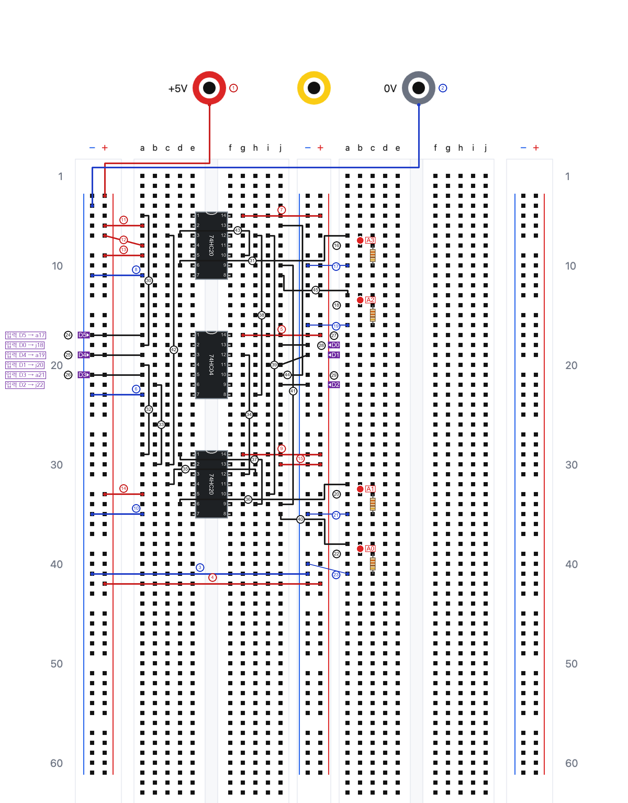

74HC42 는 16핀이에요 — pin 16 이 +5V, pin 8 이 GND 예요(14·7 이 아니에요). 74HC20 의 pin 3·11 은 빈 다리예요 — U2 pin 3 에만 D3' 를 잇는 선 두 가닥을 꽂아요
C1 LED 는 거꾸로 꽂아요 — +5V → LED → 330Ω → 출력, 출력이 0 일 때 켜져요(Negative Logic). C2 LED 는 출력 → 330Ω → LED → GND 로 1 일 때 켜져요
입력 Bit0~Bit3·D0~D5 는 점퍼선으로 +5V(=1) 또는 GND(=0) 에 직접 물려요. 스위치는 없어요. 74HC20 의 VCC 묶음 입력(U2 pin 2·4·5, U3 pin 5·13)도 반드시 +5V 에 꽂아요
C2 는 C1 을 전부 뽑고 새로 지어요 — 신호선, 74HC42 와 그 전원선 두 가닥, LED 사슬 열 개까지 뽑아요. 레일 브리지만 남겨요. C2 1단계에서 LED 사슬 넷을 반대 방향으로 다시 꽂아요
C2 2단계의 U1 pin 12 → LED A2 선은 임시예요 — 3걷기 그림대로 뽑고 나서 3단계를 해요
손으로 할 때 주의
선은 클립에 물릴 깊이까지만 꽂아요. 끝까지 밀어 넣으면 접촉이 끊길 수 있어요 (실험03 GND 선)
칩을 꽂거나 뺄 때는 전원부터 꺼요
선을 바꿀 때는 걷기 그림(빨간 점선)의 선부터 먼저 뽑고, 그다음 새 선을 꽂아요. 회로를 바꿀 때도, 회로 안에서도 같아요
선 색 — 빨강 +5V · 파랑 0V · 검정 신호 · 초록 칩 사이 중간 노드 · 회색 = 앞 단계에서 그대로 둔다 · 빨간 점선 = 뽑는다 · 회색 점선 = 계측기(꽂지 않고 문다)
진리표 — 확인 칸에는 맞으면 ✓, 다르면 실제로 본 값을 적어요. 안 본 행은 비워 둬요. 표를 통째로 못 했으면 그 표 아래에 진행하지 않았음 이라고 적어요.
스텝표 — 회색 칸에 읽은 값을 단위와 함께 적어요 (예: 3.2 V, 47 Ω). 대조할 예상값이 없는 표라서 확인 칸은 없어요.
파형 — 격자에 직접 그리고 판독 조건 줄(V/div·time/div·프로브·모드)을 채워요. 조건을 안 적으면 결과보고서에서 화면의 칸을 볼트로 바꿀 수 없어요.
오늘의 흐름
순서
회로
쓰는 IC
기록할 표
1/2
C1 · 실험 1-2) BCD to Decimal Decoder (4x16 Decoder) (74HC42)
74HC42
T1 BCD to Decimal Decoder 진리표
2/2
C2 · 실험 2-2) Decimal to Excess-3 Code Encoder (74HC04 + 74HC20 ×2)
74HC04 · 74HC20
T2 Decimal to Excess-3 Code Encoder 진리표
참조 핀아웃
IC
입력
출력
VCC
GND
미연결
74HC42 (BCD → 10진, DIP-16)
A(최하위)=15, B=14, C=13, D=12
Y0~Y6 = 1~7, Y7=9, Y8=10, Y9=11
16
8
—
74HC20 (dual 4-input NAND)
게이트1 1,2,4,5 · 게이트2 9,10,12,13
게이트1 6 · 게이트2 8
14
7
3, 11
74HC04 (hex inverter): 1→2, 3→4, 5→6, 9→8, 11→10, 13→12. VCC 14, GND 7. 74HC42 의 출력 Y7·Y8·Y9 는 pin 9·10·11 이다 — 아래에서 위로 올라간다. 74HC20 은 입력 넷이 1·2·4·5 로 한 칸(빈 다리 pin 3) 건너뛴다.
칩 자리표
두 회로는 칩을 공유하지 않는다 — C1 은 74HC42 하나, C2 는 74HC04·74HC20 둘이다. 그래서 C2 는 C1 을 전부 뽑고(rebuild) 다른 슬롯에 새로 꽂는다. 슬롯은 역할에 붙는다: 디코더(K1), 인버터(K2), 앞 NAND(K3, A3·A2), 뒤 NAND(K4, A1·A0). v2 판형이라 칩은 전부 좌 블록에 두고(R9) LED 는 우 블록이다. 좌·우 는 브레드보드 왼쪽·오른쪽 블록, 행은 칩 pin 1 이 앉는 행이다. 홀 주소 좌 j19 는 왼쪽 블록 j 열 19행이다(열 a~e 가 칩 a쪽, f~j 가 f쪽). 행은 배치.py 의 LAYOUT 이고 배치기(python -m scripts.lab.place_search <배치.py>) 결과 배치탐색.md 와 같다. K1 과 K3 은 행이 겹친다 — 두 회로가 동시에 서지 않아서다. 그래서 C2 는 K1 의 전원선까지 뽑는다. U1 이 U2·U3 사이에 서는 것은 2단계 임시 급전이 LED A2 를 빌려서다(R10 — 건너는 선 순서 = LED 순서).
슬롯
자리
회로별 칩
K1
좌 3행
C1 74HC42 (U4, BCD 디코더) · C2 비움
K2
좌 17행
C1 비움 · C2 74HC04 (U1, 인버터 여섯)
K3
좌 5행
C1 비움 · C2 74HC20 (U2, NAND A3·A2)
K4
좌 29행
C1 비움 · C2 74HC20 (U3, NAND A1·A0)
회로 1/2 · C1 · 실험 1-2) BCD to Decimal Decoder (4x16 Decoder) (74HC42) · 기록: T1 · 판독: LED
준비 — 꽂을 칩: 74HC42

강의노트 p9 · 회로 구성
교안 p9 회로도 그대로. 이 주차 첫 회로라 맨바닥에서 시작한다. 1단계에 74HC42(U4) 전원과 LED 열 사슬(+5V → LED → 330Ω, 출력 쪽이 급전 끝)을 한꺼번에 꽂는다(기반). 칩이 하나라 중간 노드가 없고 출력 열이 곧 노드 열이다. 관측 단계는 넷이다 — 1단계가 입력 넷과 Y0 를, 2~4단계가 출력을 셋씩 LED 에 잇는다. 1단계 새 신호선은 다섯이다(예산 5). LED 는 구동 핀의 행 순서로 붙는다 — 위에서부터 Y0~Y5, Y9, Y6, Y8, Y7.
단계 1

이 단계에서: 74HC42 를 K1 에 꽂는다. 칩 전원(16→VCC, 8→GND)·레일 브리지·LED 열 사슬(+5V→LED→330Ω)을 꽂는다. 신호선: Bit0→U4 pin 15, Bit1→U4 pin 14, Bit2→U4 pin 13, Bit3→U4 pin 12, U4 pin 1→LED Y0 급전
1전원잭 → 좌 VCC레일3행전원장치 +5V 잭
2전원잭 → 좌 GND레일4행전원장치 0V 잭
3좌 GND레일41행 → 중앙GND레일41행레일 브리지
4좌 VCC레일42행 → 중앙VCC레일42행레일 브리지
5좌 g3 → 중앙VCC레일3행pin 16 -> +5V 레일
6좌 a10 → 좌 GND레일10행pin 8 -> GND 레일
7중앙GND레일4행 → 좌 j4입력 Bit0 -> U4 pin 15 · 1 이면 레일 쪽 끝을 +5V 레일로 옮겨요
8중앙GND레일5행 → 좌 j5입력 Bit1 -> U4 pin 14 · 1 이면 레일 쪽 끝을 +5V 레일로 옮겨요
9중앙GND레일6행 → 좌 j6입력 Bit2 -> U4 pin 13 · 1 이면 레일 쪽 끝을 +5V 레일로 옮겨요
10중앙GND레일7행 → 좌 j7입력 Bit3 -> U4 pin 12 · 1 이면 레일 쪽 끝을 +5V 레일로 옮겨요
11우 b6 → 우 c9Y0: 330Ω(우 b6→우 b8) + LED(캐소드 우 c8→애노드 우 c9) 직렬 · 0 이면 켜짐 · Y0 — 진리표 T1 의 Y0 열
12우 a9 → 중앙VCC레일9행Y0 LED 애노드 -> +5V
13우 b10 → 우 c13Y1: 330Ω(우 b10→우 b12) + LED(캐소드 우 c12→애노드 우 c13) 직렬 · 0 이면 켜짐 · Y1 — 진리표 T1 의 Y1 열
14우 a13 → 중앙VCC레일13행Y1 LED 애노드 -> +5V
15우 b14 → 우 c17Y2: 330Ω(우 b14→우 b16) + LED(캐소드 우 c16→애노드 우 c17) 직렬 · 0 이면 켜짐 · Y2 — 진리표 T1 의 Y2 열
16우 a17 → 중앙VCC레일17행Y2 LED 애노드 -> +5V
17우 b18 → 우 c21Y3: 330Ω(우 b18→우 b20) + LED(캐소드 우 c20→애노드 우 c21) 직렬 · 0 이면 켜짐 · Y3 — 진리표 T1 의 Y3 열
18우 a21 → 중앙VCC레일21행Y3 LED 애노드 -> +5V
19우 b22 → 우 c25Y4: 330Ω(우 b22→우 b24) + LED(캐소드 우 c24→애노드 우 c25) 직렬 · 0 이면 켜짐 · Y4 — 진리표 T1 의 Y4 열
20우 a25 → 중앙VCC레일25행Y4 LED 애노드 -> +5V
21우 b26 → 우 c29Y5: 330Ω(우 b26→우 b28) + LED(캐소드 우 c28→애노드 우 c29) 직렬 · 0 이면 켜짐 · Y5 — 진리표 T1 의 Y5 열
22우 a29 → 중앙VCC레일29행Y5 LED 애노드 -> +5V
23우 b30 → 우 c33Y9: 330Ω(우 b30→우 b32) + LED(캐소드 우 c32→애노드 우 c33) 직렬 · 0 이면 켜짐 · Y9 — 진리표 T1 의 Y9 열
24우 a33 → 중앙VCC레일33행Y9 LED 애노드 -> +5V
25우 b34 → 우 c37Y6: 330Ω(우 b34→우 b36) + LED(캐소드 우 c36→애노드 우 c37) 직렬 · 0 이면 켜짐 · Y6 — 진리표 T1 의 Y6 열
26우 a37 → 중앙VCC레일37행Y6 LED 애노드 -> +5V
27우 b38 → 우 c41Y8: 330Ω(우 b38→우 b40) + LED(캐소드 우 c40→애노드 우 c41) 직렬 · 0 이면 켜짐 · Y8 — 진리표 T1 의 Y8 열
28우 a41 → 중앙VCC레일41행Y8 LED 애노드 -> +5V
29우 b42 → 우 c45Y7: 330Ω(우 b42→우 b44) + LED(캐소드 우 c44→애노드 우 c45) 직렬 · 0 이면 켜짐 · Y7 — 진리표 T1 의 Y7 열
30우 a45 → 중앙VCC레일45행Y7 LED 애노드 -> +5V
31좌 d3 → 우 a6Y0 = U4 pin 1 -> LED Y0
확인 노드: Y0 (U4 pin 1)
확인: 노드 Y0 — LED Y0 을 T1 열 행 전부(0000~1001)로 본다 (Bit3~Bit0 = 0000 에서만 켜짐 — 셀 0). 74HC42 첫 사용
사진: 시험한 행마다 1장씩 찍어요(불일치 행은 꼭). 파일명은 표의 '사진 파일명' 열 그대로예요 — 앞에 실험 번호(예: 실험03)는 붙이지 않아요
T1 · 불일치 기록
불일치 행
예상
실제
사진 파일
짐작된 원인
단계에서 안 본 노드 — 프로브로 찍을 핀
틀린 행이 나오면 입력 쪽 노드부터 프로브로 찍어 봐요. 기대값과 처음 갈라지는 노드가 고장 자리예요 — 그 게이트의 입력 핀이 틀리면 선, 맞으면 게이트 문제예요
Bit3
Bit2
Bit1
Bit0
Y1 U4 pin 2
Y2 U4 pin 3
Y4 U4 pin 5
Y5 U4 pin 6
Y7 U4 pin 9
Y8 U4 pin 10
0
0
0
0
1
1
1
1
1
1
0
0
0
1
0
1
1
1
1
1
0
0
1
0
1
0
1
1
1
1
0
0
1
1
1
1
1
1
1
1
0
1
0
0
1
1
0
1
1
1
0
1
0
1
1
1
1
0
1
1
0
1
1
0
1
1
1
1
1
1
0
1
1
1
1
1
1
1
0
1
1
0
0
0
1
1
1
1
1
0
1
0
0
1
1
1
1
1
1
1
회로 2/2 · C2 · 실험 2-2) Decimal to Excess-3 Code Encoder (74HC04 + 74HC20 ×2) · 기록: T2 · 판독: LED
앞 회로의 선과 LED 사슬까지 전부 뽑아요. 레일 브리지만 그대로 둬요(새 선·부품은 단계 그림을 따라 꽂아요) · 뺄 칩: 74HC42 · 꽂을 칩: 74HC04, 74HC20

강의노트 p12 · 회로 구성
교안 p12 회로도 그대로, C1 을 걷고 새로 짓는다. 전원을 끄고 C1 의 신호선(입력 점퍼·LED 급전선)을 전부 뽑고, 74HC42 와 그 전원선 두 가닥을 빼고, LED 사슬 열 개(LED·330Ω·+5V 선)도 뽑는다. 레일 브리지만 그대로 둔다. K1 의 전원선은 K3 의 74HC20(U2)과 행이 겹쳐 남겨 둘 수 없다(# 칩 자리표, 교안 원문이 아니다). 1단계가 74HC04(U1)를 K2, 74HC20(U2·U3)을 K3·K4 에 꽂고 전원과 VCC 묶음, LED 네 사슬(출력 → 330Ω → LED → GND)을 꽂는다.
관측 단계는 다섯이다 — A3(1), 인버터 D0'(2, 임시 급전), A1(3), A0(4), A2(5). 인버터가 하나뿐인 A3 부터 세우고, 입력 넷이 모두 인버터를 거치는 A2 를 마지막에 둔다 — 앞 단계에 꽂은 인버터 출력에서 이어 가도록 짠 순서이고 교안 원문이 아니다. 2단계는 인버터 셋에 입력을 물리고 그중 D0' 하나를 그 시점에 비어 있는 LED A2 로 본다. 그 임시 급전선을 3걷기 에서 뽑는다. D0'(f쪽 pin 12)를 고른 것은 a쪽 D4'(pin 4)에서 LED 로 가는 길이 칩 몸통을 건널 자리가 없어서다 (교안 원문이 아니다). 2단계는 입력 넷을 물리느라 다섯 가닥이 차서 D1 도 여기서 꽂아 둔다 — 5단계가 예산에 차서다. 각 단계의 새 신호선은 셋~다섯이다(예산 5). 걷기 주소는 배치.py 가 뽑은 그림의 주소다.
단계 1

이 단계에서: (배너대로 C1 신호선·74HC42·LED 사슬 열 개를 뽑은 상태에서) 74HC04 를 K2, 74HC20 을 K3·K4 에 꽂는다. 세 칩 전원(14→VCC, 7→GND), VCC 묶음(U2 pin 2·4·5, U3 pin 5·13 → +5V), LED 네 사슬(330Ω→LED→GND)을 꽂는다. 신호선: D5→U1 pin 1, U1 pin 2→U2 pin 1, U2 pin 6→LED A3 급전
1전원잭 → 좌 VCC레일3행전원장치 +5V 잭
2전원잭 → 좌 GND레일4행전원장치 0V 잭
3좌 GND레일41행 → 중앙GND레일41행레일 브리지
4좌 VCC레일42행 → 중앙VCC레일42행레일 브리지
5좌 g17 → 중앙VCC레일17행pin 14 -> +5V 레일
6좌 a23 → 좌 GND레일23행pin 7 -> GND 레일
7좌 g5 → 중앙VCC레일5행pin 14 -> +5V 레일
8좌 a11 → 좌 GND레일11행pin 7 -> GND 레일
9좌 g29 → 중앙VCC레일29행pin 14 -> +5V 레일
10좌 a35 → 좌 GND레일35행pin 7 -> GND 레일
11좌 a6 → 좌 VCC레일6행U2 pin 2 -> +5V (교안 VCC 묶음)
12좌 a8 → 좌 VCC레일7행U2 pin 4 -> +5V (교안 VCC 묶음)
13좌 a9 → 좌 VCC레일9행U2 pin 5 -> +5V (교안 VCC 묶음)
14좌 a33 → 좌 VCC레일33행U3 pin 5 -> +5V (교안 VCC 묶음)
15좌 j30 → 중앙VCC레일30행U3 pin 13 -> +5V (교안 VCC 묶음)
16우 b7 → 우 c10A3: LED(우 b7→우 b8) + 330Ω(우 c8→우 c10) 직렬 · A3 — 진리표 T2 의 A3 열
17우 a10 → 중앙GND레일10행A3 저항 아래 -> GND
18우 b13 → 우 c16A2: LED(우 b13→우 b14) + 330Ω(우 c14→우 c16) 직렬 · A2 — 진리표 T2 의 A2 열
19우 a16 → 중앙GND레일16행A2 저항 아래 -> GND
20우 b32 → 우 c35A1: LED(우 b32→우 b33) + 330Ω(우 c33→우 c35) 직렬 · A1 — 진리표 T2 의 A1 열
21우 a35 → 중앙GND레일35행A1 저항 아래 -> GND
22우 b38 → 우 c41A0: LED(우 b38→우 b39) + 330Ω(우 c39→우 c41) 직렬 · A0 — 진리표 T2 의 A0 열
23우 a41 → 중앙GND레일40행A0 저항 아래 -> GND
24좌 GND레일17행 → 좌 a17입력 D5 -> U1 pin 1 · 1 이면 레일 쪽 끝을 +5V 레일로 옮겨요
25좌 a18 → 좌 a5D5' (U1 pin 2) -> U2 pin 1
26좌 d10 → 우 a7A3 = U2 pin 6 -> LED A3
확인 노드: A3 (U2 pin 6)
확인: 노드 A3 — LED A3 을 D5 두 값으로 본다 (D5=1 에서만 켜짐). 다른 입력은 아직 꽂지 않았다. 74HC04·74HC20 U2 첫 사용
확인: 노드 A1 — LED A1 을 T2 여섯 행 전부로 본다 (D0·D3·D4 가 1 인 행에서 켜짐). 74HC20 U3 첫 사용
입력 — 점퍼 1=+5V · 0=GND
A1예상 U3 pin 6
확인
D4
D3
D0
0
0
1
1
0
0
0
0
0
1
0
1
1
0
0
1
단계 4

이 단계에서: 신호선: D2→U1 pin 9, U3 pin 1→U3 pin 9 (D4' 이어 감), U1 pin 8→U2 pin 12 (D2'), U2 pin 12→U3 pin 10 (D2' 이어 감), U3 pin 8→LED A0 급전
1중앙GND레일22행 → 좌 j22입력 D2 -> U1 pin 9 · 1 이면 레일 쪽 끝을 +5V 레일로 옮겨요
2좌 d29 → 좌 h34D4' 이어 감 (U3 pin 1 -> U3 pin 9)
3좌 h23 → 좌 h7D2' (U1 pin 8) -> U2 pin 12
4좌 i7 → 좌 i33D2' 이어 감 (U2 pin 12 -> U3 pin 10)
5좌 j35 → 우 a38A0 = U3 pin 8 -> LED A0
회색 = 앞 단계에서 그대로 둔 것 38개
확인 노드: A0 (U3 pin 8)
확인: 노드 A0 — LED A0 을 T2 여섯 행 전부로 본다 (D0·D2·D4 가 1 인 행에서 켜짐)
입력 — 점퍼 1=+5V · 0=GND
A0예상 U3 pin 8
확인
D4
D2
D0
0
0
1
1
0
0
0
0
0
1
0
1
1
0
0
1
단계 5

이 단계에서: 신호선: U3 pin 9→U2 pin 9 (D4' 이어 감), U3 pin 2→U2 pin 3 (D3' 이어 감, n.c. 중계), U2 pin 3→U2 pin 10 (D3' 이어 감), U1 pin 10→U2 pin 13 (D1'), U2 pin 8→LED A2 급전
1좌 j34 → 좌 j10D4' 이어 감 (U3 pin 9 -> U2 pin 9)
2좌 c30 → 좌 c7D3' 이어 감 (U3 pin 2 -> U2 pin 3, n.c. 중계)
3좌 d7 → 좌 g9D3' 이어 감 (U2 pin 3 -> U2 pin 10)
4좌 j21 → 좌 j6D1' (U1 pin 10) -> U2 pin 13
5좌 j11 → 우 a13A2 = U2 pin 8 -> LED A2
회색 = 앞 단계에서 그대로 둔 것 43개
확인 노드: A2 (U2 pin 8)
확인: 노드 A2 — T2 여섯 행 전부. 네 LED 가 행마다 0011·0100·0101·0110·0111·1000(A3 A2 A1 A0, 켜짐 = 1)이어야 한다
완성본 — 손그림 원도 (회색 없음)

결선도: 실험05_2-2_결선도_Excess3인코더.png
1전원잭 → 좌 VCC레일3행전원장치 +5V 잭
2전원잭 → 좌 GND레일4행전원장치 0V 잭
3좌 GND레일41행 → 중앙GND레일41행레일 브리지
4좌 VCC레일42행 → 중앙VCC레일42행레일 브리지
5좌 g17 → 중앙VCC레일17행pin 14 -> +5V 레일
6좌 a23 → 좌 GND레일23행pin 7 -> GND 레일
7좌 g5 → 중앙VCC레일5행pin 14 -> +5V 레일
8좌 a11 → 좌 GND레일11행pin 7 -> GND 레일
9좌 g29 → 중앙VCC레일29행pin 14 -> +5V 레일
10좌 a35 → 좌 GND레일35행pin 7 -> GND 레일
11좌 a6 → 좌 VCC레일6행U2 pin 2 -> +5V (교안 VCC 묶음)
12좌 a8 → 좌 VCC레일7행U2 pin 4 -> +5V (교안 VCC 묶음)
13좌 a9 → 좌 VCC레일9행U2 pin 5 -> +5V (교안 VCC 묶음)
14좌 a33 → 좌 VCC레일33행U3 pin 5 -> +5V (교안 VCC 묶음)
15좌 j30 → 중앙VCC레일30행U3 pin 13 -> +5V (교안 VCC 묶음)
16우 b7 → 우 c10A3: LED(우 b7→우 b8) + 330Ω(우 c8→우 c10) 직렬 · A3 — 진리표 T2 의 A3 열
17우 a10 → 중앙GND레일10행A3 저항 아래 -> GND
18우 b13 → 우 c16A2: LED(우 b13→우 b14) + 330Ω(우 c14→우 c16) 직렬 · A2 — 진리표 T2 의 A2 열
19우 a16 → 중앙GND레일16행A2 저항 아래 -> GND
20우 b32 → 우 c35A1: LED(우 b32→우 b33) + 330Ω(우 c33→우 c35) 직렬 · A1 — 진리표 T2 의 A1 열
21우 a35 → 중앙GND레일35행A1 저항 아래 -> GND
22우 b38 → 우 c41A0: LED(우 b38→우 b39) + 330Ω(우 c39→우 c41) 직렬 · A0 — 진리표 T2 의 A0 열
23우 a41 → 중앙GND레일40행A0 저항 아래 -> GND
24좌 GND레일17행 → 좌 a17입력 D5 -> U1 pin 1 · 1 이면 레일 쪽 끝을 +5V 레일로 옮겨요
25좌 GND레일19행 → 좌 a19입력 D4 -> U1 pin 3 · 1 이면 레일 쪽 끝을 +5V 레일로 옮겨요
26좌 GND레일21행 → 좌 a21입력 D3 -> U1 pin 5 · 1 이면 레일 쪽 끝을 +5V 레일로 옮겨요
27중앙GND레일18행 → 좌 j18입력 D0 -> U1 pin 13 · 1 이면 레일 쪽 끝을 +5V 레일로 옮겨요
28중앙GND레일19행 → 좌 j20입력 D1 -> U1 pin 11 · 1 이면 레일 쪽 끝을 +5V 레일로 옮겨요
29중앙GND레일22행 → 좌 j22입력 D2 -> U1 pin 9 · 1 이면 레일 쪽 끝을 +5V 레일로 옮겨요
30좌 a18 → 좌 a5D5' (U1 pin 2) -> U2 pin 1
31좌 d10 → 우 a7A3 = U2 pin 6 -> LED A3
32좌 a20 → 좌 a29D4' (U1 pin 4) -> U3 pin 1
33좌 b22 → 좌 b30D3' (U1 pin 6) -> U3 pin 2
34좌 g19 → 좌 g31D0' (U1 pin 12) -> U3 pin 12
35좌 h31 → 좌 c32D0' 이어 감 (U3 pin 12 -> U3 pin 4)
36좌 d34 → 우 a32A1 = U3 pin 6 -> LED A1
37좌 d29 → 좌 h34D4' 이어 감 (U3 pin 1 -> U3 pin 9)
38좌 h23 → 좌 h7D2' (U1 pin 8) -> U2 pin 12
39좌 i7 → 좌 i33D2' 이어 감 (U2 pin 12 -> U3 pin 10)
40좌 j35 → 우 a38A0 = U3 pin 8 -> LED A0
41좌 j34 → 좌 j10D4' 이어 감 (U3 pin 9 -> U2 pin 9)
42좌 c30 → 좌 c7D3' 이어 감 (U3 pin 2 -> U2 pin 3, n.c. 중계)
43좌 d7 → 좌 g9D3' 이어 감 (U2 pin 3 -> U2 pin 10)
44좌 j21 → 좌 j6D1' (U1 pin 10) -> U2 pin 13
45좌 j11 → 우 a13A2 = U2 pin 8 -> LED A2
손그림은 이 그림을 따라 그리고, 학번·이름·날짜는 손으로 적어요
U1 = 74HC04 (hex inverter, DIP-14) — K2
pin 14 → VCC(+5V)
pin 7 → GND
pin 1 ← 입력 D5 (U1A)
pin 2 → U2.pin1 (D5' → U2A)
pin 3 ← 입력 D4 (U1B)
pin 4 → U3.pin1 (D4' → U3A, 거기서 U3 pin 9 → U2 pin 9 로 이어 감)
pin 5 ← 입력 D3 (U1C)
pin 6 → U3.pin2 (D3' → U3A, 거기서 U2 pin 3 을 거쳐 U2 pin 10 으로 이어 감)
pin 9 ← 입력 D2 (U1D)
pin 8 → U2.pin12 (D2' → U2B, 거기서 U3 pin 10 으로 이어 감)
pin 11 ← 입력 D1 (U1E)
pin 10 → U2.pin13 (D1' → U2B)
pin 13 ← 입력 D0 (U1F)
pin 12 → U3.pin12 (D0' → U3B, 거기서 U3 pin 4 로 이어 감)
U2 = 74HC20 (dual 4-input NAND, DIP-14) — K3
pin 14 → VCC(+5V)
pin 7 → GND
pin 1 ← U1.pin2 (U2A, D5')
pin 2 → VCC(+5V) (U2A, 교안 VCC 묶음)
pin 4 → VCC(+5V) (U2A, 교안 VCC 묶음)
pin 5 → VCC(+5V) (U2A, 교안 VCC 묶음)
pin 6 → 330Ω → LED A3 애노드, LED 캐소드 → GND ※ A3, T2 의 A3 열
pin 3 ← U3.pin2 (n.c. 디딤돌, D3')
pin 3 → U2.pin10 (D3' 이어 감)
pin 9 ← U3.pin9 (U2B, D4')
pin 10 ← U2.pin3 (U2B, D3')
pin 12 ← U1.pin8 (U2B, D2')
pin 12 → U3.pin10 (D2' 이어 감)
pin 13 ← U1.pin10 (U2B, D1')
pin 8 → 330Ω → LED A2 애노드, LED 캐소드 → GND ※ A2, T2 의 A2 열
미연결: pin 11 → 아무것도 꽂지 않는다 (n.c.)
U3 = 74HC20 (dual 4-input NAND, DIP-14) — K4
pin 14 → VCC(+5V)
pin 7 → GND
pin 1 ← U1.pin4 (U3A, D4')
pin 1 → U3.pin9 (D4' 이어 감)
pin 2 ← U1.pin6 (U3A, D3')
pin 2 → U2.pin3 (D3' 이어 감, n.c. 디딤돌)
pin 4 ← U3.pin12 (U3A, D0')
pin 5 → VCC(+5V) (U3A, 교안 VCC 묶음)
pin 6 → 330Ω → LED A1 애노드, LED 캐소드 → GND ※ A1, T2 의 A1 열
pin 9 ← U3.pin1 (U3B, D4')
pin 9 → U2.pin9 (D4' 이어 감)
pin 10 ← U2.pin12 (U3B, D2')
pin 12 ← U1.pin12 (U3B, D0')
pin 12 → U3.pin4 (D0' 이어 감)
pin 13 → VCC(+5V) (U3B, 교안 VCC 묶음)
pin 8 → 330Ω → LED A0 애노드, LED 캐소드 → GND ※ A0, T2 의 A0 열
미연결: pin 3, 11 → 아무것도 꽂지 않는다 (n.c.)
핀 점검 — 사용 핀은 다 물렸나요? 미사용 핀은 지시대로인가요? (칩마다 따로)
U1 = 74HC04 (hex inverter, DIP-14) — K2
미사용 입력핀: 없음 (인버터 여섯을 다 쓴다)
미사용 출력핀: 없음
U2 = 74HC20 (dual 4-input NAND, DIP-14) — K3
미사용 입력핀: 없음
U3 = 74HC20 (dual 4-input NAND, DIP-14) — K4
미사용 입력핀: 없음
게이트 안의 입력 배정은 교안 p12 그대로다 — U2A pin 1 = D5', U2B pin 9·10·12·13 = D4'·D3'· D2'·D1', U3A pin 1·2·4 = D4'·D3'·D0', U3B pin 9·10·12 = D4'·D2'·D0'. 교안은 인버터 출력에서 가지를 쳐 각 NAND 로 보내는데, 이 결선도는 같은 노드를 목적지 스트립에서 이어 간다. D3' 는 U3 pin 2(a쪽)에서 U2 pin 10(f쪽)으로 칩 사이에서 쪽을 바꿀 수 없어(v2 렌더러 R8) U2 의 n.c. pin 3(a쪽)으로 건너간 뒤 U2 안에서 pin 10 으로 이어 간다. A3·A1 은 74HC20 a쪽 게이트(pin 6)가 구동한다 — v2 의 "LED 구동 게이트는 f쪽" 규약을 교안 배정 그대로 어긴다.